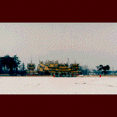

聖天宮/埼玉県坂戸市
これは中国や台湾などに行けばゲップが出そうな程よく見かける道教寺院である。しかしここはサイタマなのだ。横浜や神戸の中華街にあるのなら納得もできよう。しかしここはサイタマの典型的な風景、住宅とチェーン店と工場に囲まれた田んぼのど真ん中にあるのだ。
この地と道教とは一切関係無い。それでもここに道教寺院が建ったのは道教の聖地、崑崙と同じ緯度であるという理由ただ一点なのだ。無論そこに至るまでには「夢のお告げ」などがあったりするのだが。
この廟を建てたお方、台湾の実業家というか財閥の人なのだが、十数年前、大病を煩い医者にも見放されたのだが「仏様の御加護」により奇蹟的に助かった。で、なにか仏様に報いることはないかと考えた末、ご想像の通りこの廟の建設を発案したのだ。
製材、加工は台湾でおこない組み立ても台湾から大工さんを連れてきて建設にあたったという。12年がかりの仕事だったという。
外観、内装共に本格的な道教寺院なのも納得できる。これは完全に台湾のお寺なのだ。
個人的な理由で建てられた故、ここでは布教活動等は一切行っていないとの事。拝観料も取っていない。一応宗教法人にはなっているようだけど。
しかし寺内にはスタッフが数人詰めていて、簡単なガイドや道教流の参拝方法などを教えてくれたりしている。
スタッフのギャラ、その他諸々のランニングコスト等はやっぱりその財閥氏が負担してるんだろうなあ。台湾の金持ちはハンパじゃないねえ。
何から何まで本場中華の本格的寺院、しかしサイタマの田んぼの真ん中にあるその姿と個人の「妄想」がストレートに具現化してしまったという点で、中国や台湾ではお目にかかれないような不思議なオーラを放っている。
1998.2.
珍寺大道場 HOME